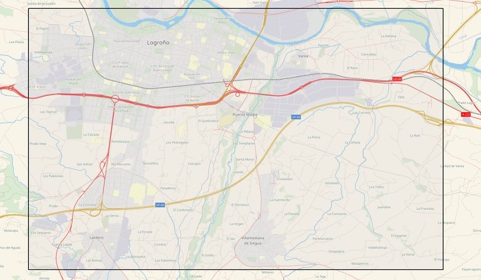
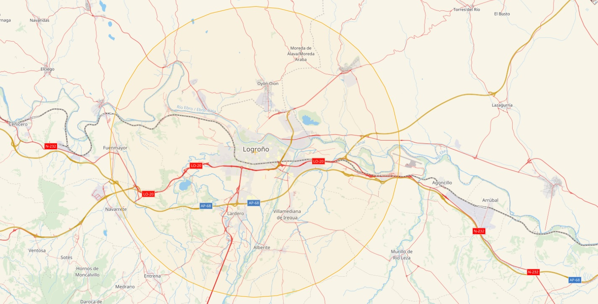
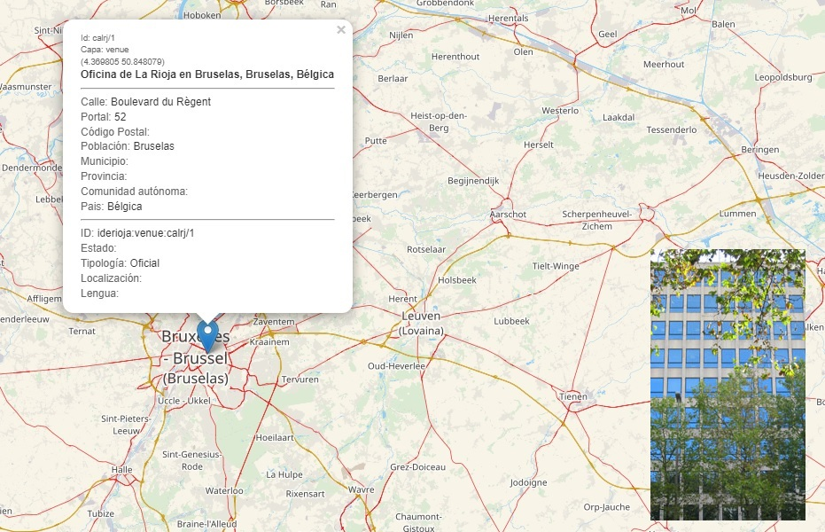

GEOCODIFICACIÓN DIRECTA
El método de geocodificación directa, es el proceso que es necesario utilizar para la búsqueda y extracción de datos de una dirección, topónimo o POI, junto con las coordenadas geográficas de su ubicación, a partir de sus datos identificativos o de referencia.
La url (endpoint) a la que dirigir la petición es: https://geocoder.larioja.org/v1/search
Construcción de la consulta
El formato de interrogación a la API se construye a partir de la url de referencia de este método (https://geocoder.larioja.org/v1/search), seguido del signo ? y de la secuencia de parámetros que configuran la pregunta, separados estos por el signo &.
Si se desea localizar una dirección, topónimo o POI que contenga un texto determinado, que es el caso más común, el parámetro a utilizar es text:
| Parámetro | Tipo | Obligatorio | Defecto | Descripción | Ejemplo |
|---|---|---|---|---|---|
text |
cadena de caracteres | sí | ninguno | Texto de la dirección a buscar | Calle Mayor 10 |
En el ejemplo siguiente el texto a buscar en la dirección es «carnicerías», para lo cual se añade a la url del método de búsqueda https://geocoder.larioja.org/v1/search, el signo ? y el parámetro text=carnicerías.
https://geocoder.larioja.org/v1/search?text=carnicerías
Pulsando sobre el enlace anterior se obtiene un fichero en formato GeoJSON que contiene los resultados de la búsqueda que mejor coinciden con el texto «carnicerías». El fichero con formato GeoJSON puede ser leído en un navegador web (1) o en un procesador de textos.
En este caso, los resultados obtenidos son los siguientes (2):
TRAVESÍA CARNICERÍAS, Ausejo, La Rioja, España (-2.17064,42.34409)
CALLE CARNICERÍAS, Ausejo, La Rioja, España (-2.17054,42.34465)
TRAVESÍA CARNICERÍAS, San Millán de la Cogolla, La Rioja, España (-2.861,42.3302)
CALLE CARNICERÍAS, Cuzcurrita de Río Tirón, La Rioja, España (-2.9651,42.54251)
CALLE CARNICERÍAS, Cornago, La Rioja, España (-2.09479,42.06481)
CALLEJÓN CARNICERÍAS, Cornago, La Rioja, España (-2.09421,42.06522)
CALLE CARNICERÍAS, Ezcaray, La Rioja, España (-3.0157,42.3242)
CALLE CARNICERÍAS, Lardero, La Rioja, España (-2.46253,42.42814)
CALLE CARNICERÍAS, Logroño, La Rioja, España (-2.4464,42.46693)
CALLEJÓN CARNICERÍAS, Azofra, La Rioja, España (-2.8012,42.42344)
Configurar el número de resultados
Por defecto la API devuelve hasta 10 resultados. Si se desea un número distinto de resultados, este se puede configurar en la llamada utilizando el parámetro size.
| Parámetro | Tipo | Obligatorio | Defecto | Descripción | Ejemplo |
|---|---|---|---|---|---|
size |
integer | no | 10 | Número deseado de resultados | 5 |
Si en el ejemplo anterior se deseara recibir solamente un único resultado, la sintaxis de la consulta debería ser:
https://geocoder.larioja.org/v1/search?text=carnicerías&size=1
siendo este el resultado obtenido:
TRAVESÍA CARNICERÍAS, Ausejo, La Rioja, España (-2.17064,42.34409)
Consulta en un área determinada
Es posible delimitar la búsqueda de direcciones a una región o país en particular, o limitarla a un área específica. La API Pelias que utiliza el geocodificador del Gobierno de La Rioja ofrece tres fórmulas para limitar espacialmente la búsqueda: rectángulo, círculo y país.
Búsqueda en un área rectangular
Para limitar la búsqueda a un área geográfica rectangular, es necesario conocer previamente las coordenadas latitud y longitud, mínimas y máximas, que definen el rectángulo (3).
En este caso los parámetros a utilizar son los siguientes:
| Parámetro | Tipo | Obligatorio | Defecto | Descripción | Ejemplo |
|---|---|---|---|---|---|
boundary.rect.max_lat |
numérico coma flotante | no | ninguno | Valor máximo de la latitud utilizado en la búsqueda en una región rectangular (4) | 42.4732824 |
boundary.rect.max_lon |
numérico coma flotante | no | ninguno | Valor máximo de la longitud utilizado en la búsqueda en una región rectangular (4) | -2.3676873 |
boundary.rect.min_lat |
numérico coma flotante | no | ninguno | Valor mínimo de la latitud utilizado en la búsqueda en una región rectangular (4) | 42.4205850 |
boundary.rect.min_lon |
numérico coma flotante | no | ninguno | Valor mínimo de la longitud utilizado en la búsqueda en una región rectangular (4) | -2.4811247 |
Por ejemplo, para encontrar una dirección que contenga el texto «donantes» en el área rectangular que muestra la imagen, definida por las coordenadas lat_min=42.4205850; lon_min=-2.4811247; lat_max=42.4732824; lon_max=-2.3676873.

La sintaxis a utilizar es:
siendo estos los resultados obtenidos:
CALLE DONANTES DE SANGRE, Logroño, La Rioja, España (-2.43118,42.46302)
CALLE DONANTES DE SANGRE, Lardero, La Rioja, España (-2.45792,42.42886)
CALLE DONANTES DE SANGRE, Villamediana de Iregua, La Rioja, España (-2.41669,42.43006)
Búsqueda en un área circular
En el aquellos casos en los que se desea localizar las direcciones que se encuentran dentro de una distancia a un punto dado, se puede utilizar la búsqueda en un área circular, señalando una coordenada central de referencia y el radio en km del círculo dentro del cual se quiere realizar la búsqueda.
Los parámetros a utilizar en este caso son los siguientes:
| Parámetro | Tipo | Obligatorio | Defecto | Descripción | Ejemplo |
|---|---|---|---|---|---|
boundary.circle.lat |
numérico coma flotante | no | ninguno | Valor de la latitud del punto central del círculo utilizado en la búsqueda en un área circular (4) | 42.46456 |
boundary.circle.lon |
numérico coma flotante | no | ninguno | Valor de la longitud del punto central del círculo utilizado en la búsqueda en un área circular (4) | -2.44660 |
boundary.circle.radius |
numérico coma flotante | no | 50 | Valor del radio (kilómetros) utilizado en la búsqueda en un área circular (4) | 10 |
Por ejemplo, para encontrar una dirección que contenga el texto «mayor» en un área circular de 10 km desde Logroño (La Rioja), con coordenadas de referencia (lat,lon) 42.464560,-2.446600.

La sintaxis a utilizar es:
Que arroja el siguiente resultado:
CALLE MAYOR, Logroño, La Rioja, España (-2.4426,42.46836)
CALLE MAYOR, Alberite, La Rioja, España (-2.42766,42.40385)
CALLE MAYOR, Fuenmayor, La Rioja, España (-2.55909,42.46724)
CALLE MAYOR ALTA, Fuenmayor, La Rioja, España (-2.5599,42.46709)
CALLE SANCHO EL MAYOR, Logroño, La Rioja, España (-2.46213,42.45926)
Búsqueda aplicando jerarquía administrativa
El almacenamiento de información mantiene internamente una estructuración jerárquica entre lugares, aplicando un concepto denominado jerarquía administrativa, en el que cada registro se asocia a un vecindario, ciudad, región, país y otras regiones principales.
Esta propiedad tiene múltiples aplicaciones entre las que destaca el filtrado de información. El ID global de Pelias (gid) de cualquier registro se puede usar con el filtro boundary.gid para devolver solo registros con un ascendente determinado.
Si se definen varios tipos de regiones en la misma solicitud, los resultados corresponderán a la intersección de todos los límites. Por lo que si las regiones no se superponen, el resultado de la consulta no contendrá datos.
Priorización de resultados por proximidad
En algunas ocasiones es conveniente presentar los resultados más cercanos a una ubicación o región en la parte superior de la lista, sin renunciar a otros resultados que se encuentran geográficamente más lejanos.
La geolocalización directa permite priorizar los resultados dentro de los límites geográficos, incluso alrededor de un punto, dentro de un país o dentro de una región.
Priorizar la proximidad a un punto
Aplicando a la búsqueda el parámetro focus.point, los resultados se ordenarán por su proximidad a la coordenada dada.
Para las mismas condiciones, los resultados más cercanos al punto aparecerán en la parte superior de la relación. Sin embargo, a diferencia de las consultas circunscritas a áreas rectangulares o circulares, este parámetro puede devolver resultados muy distantes de la coordenada de referencia.
Los parámetros a utilizar para la consulta por proximidad a un punto son:
| Parámetro | Tipo | Obligatorio | Defecto | Descripción | Ejemplo |
|---|---|---|---|---|---|
focus.point.lat |
numérico coma flotante | no | ninguno | Valor de la latitud utilizado en la búsqueda alrededor de un punto (4) | 42.46456 |
focus.point.lon |
numérico coma flotante | no | ninguno | Valor de la longitud utilizado en la búsqueda alrededor de un punto (4) | -2.44660 |
Si repetimos la consulta de ejemplo utilizada en la busqueda por círculo, pero en este caso utilizando las coordenadas de Logroño para consultar por proximidad a un punto:
https://geocoder.larioja.org/v1/search?text=mayor&focus.point.lat=42.46456&focus.point.lon=-2.44660
Se obtiene el siguiente resultado:
CALLE MAYOR, Logroño, La Rioja, España (-2.4426,42.46836) [distancia: 0.536]
CALLE MAYOR, Alberite, La Rioja, España (-2.42766,42.40385) [distancia: 6.935]
PLAZA MAYOR, Navarrete, La Rioja, España (-2.56112,42.42946) [distancia: 10.186]
CALLE MAYOR, Entrena, La Rioja, España (-2.53035,42.38758) [distancia: 10.991]
CALLE MAYOR, Murillo de Río Leza, La Rioja, España (-2.32541,42.40358) [distancia: 12.051]
PLAZA MAYOR, Albelda de Iregua, La Rioja, España (-2.47447,42.35764) [distancia: 12.121]
CALLE MAYOR, Albelda de Iregua, La Rioja, España (-2.47249,42.35724) [distancia: 12.135]
CALLE MAYOR, Murillo de Río Leza, La Rioja, España (-2.3244,42.39899) [distancia: 12.413]
PLAZA MAYOR, Medrano, La Rioja, España (-2.554,42.38268) [distancia: 12.687]
CALLE MAYOR, Ribafrecha, La Rioja, España (-2.38756,42.35557) [distancia: 13.067]
Búsqueda combinada priorizada dentro de un área
Es posible combinar en la misma consulta la búsqueda en un área determinada, ordenando al mismo tiempo los resultados por su proximidad a un punto dado.
En el siguiente ejemplo se prioriza la búsqueda en un área rectangular en las proximidades de Logroño, priorizando la proximidad a su esquina de coordenadas latitud,longitud mínimas:
El resultado obtenido por orden de priorización es:
PLAZA MAYOR, Albelda de Iregua, La Rioja, España (-2.47447,42.35764) [distancia: 1.813]
CALLE MAYOR, Albelda de Iregua, La Rioja, España (-2.47249,42.35724) [distancia: 1.873]
CALLE MAYOR, Alberite, La Rioja, España (-2.42766,42.40385) [distancia: 8.236]
CALLE MAYOR, Ribafrecha, La Rioja, España (-2.38756,42.35557) [distancia: 8.255]
CALLE MAYOR, Logroño, La Rioja, España (-2.4426,42.46836) [distancia: 14.301]
CALLE SANCHO EL MAYOR, Logroño, La Rioja, España (-2.46213,42.45926) [distancia: 12.98]
Filtrado de la búsqueda
Filtrado por origen de los datos
El almacén de datos de referencia del geocodificador del Gobierno de La Rioja permite combinar datos procedentes de distintas fuentes de datos (5).
La API Pelias ofrece la posibilidad de seleccionar, entre todos, el conjunto de datos de referencia al cual dirigir la búsqueda.
Cuando se realiza una consulta, esta se dirige por defecto al conjunto de todas las direcciones que están almacenadas en la base de datos.
Utilizando el parámetro sources, es posible definir los conjuntos de datos a los que dirigir la petición.
| Parámetro | Tipo | Obligatorio | Defecto | Descripción | Ejemplo |
|---|---|---|---|---|---|
sources |
cadena de caracteres | no | todas las fuentes | Listado de fuentes de datos separados por comas, codificados según lista controlada Proveedores de datos | calrj, mun26132 |
El siguiente ejemplo realiza una consulta general a toda la base de datos:
https://geocoder.larioja.org/v1/search?text=doctor 10
En tanto que el siguiente ejemplo dirige la consulta solamente a los datos aportados por la Comunidad Autónoma de La Rioja:
https://geocoder.larioja.org/v1/search?text=doctor 10&sources=calrj
Filtrado por tipo de datos
El almacenamiento de datos se realiza en tablas diferentes en función de su naturaleza, lo que permite diferenciar tres tipos de datos: dirección (address) ; calle (street) y lugar (venue).
El parámetro layers permite dirigir la petición de información a las siguientes capas, con el fin de obtener el resultado deseado:
| layer (capa) | descripción |
|---|---|
| venue | topónimos; puntos de interés; nombres propios de las direcciones |
| address | puntos con una dirección postal |
| street | calles; vías; carreteras |
El uso del parámetro layers es el siguiente:
| Parámetro | Tipo | Obligatorio | Defecto | Descripción | Ejemplo |
|---|---|---|---|---|---|
layers |
cadena de caracteres | no | todas las capas | Nombres de las capas de datos a las que se dirije la consulta, separados por comas | venue, address, street |
El siguiente ejemplo realiza la búsqueda del punto de interés Oficina de La Rioja en Bruselas:
https://geocoder.larioja.org/v1/search?text=Oficina de La Rioja en Bruselas&layers=venue

Cuadro de parámetros
Esta es la relación de parámetros que se pueden utilizar en las operaciones de geocodificación directa:
| Parámetro | Tipo | Obligatorio | Defecto | Descripción | Ejemplo |
|---|---|---|---|---|---|
boundary.circle.lat |
numérico coma flotante | no | ninguno | Valor de la latitud del punto central del círculo utilizado en la búsqueda en una región circular (4) | 42.46456 |
boundary.circle.lon |
numérico coma flotante | no | ninguno | Valor de la longitud del punto central del círculo utilizado en la búsqueda en una región circular (4) | -2.44660 |
boundary.circle.radius |
numérico coma flotante | no | 50 | Valor del radio (kilómetros) utilizado en la búsqueda en una región circular (4) | 10 |
boundary.country |
cadena de caracteres | no | ninguno | NO IMPLEMENTADO. |
|
boundary.gid |
cadena de caracteres | no | ninguno | NO IMPLEMENTADO. |
|
boundary.rect.max_lat |
numérico coma flotante | no | ninguno | Valor máximo de la latitud utilizado en la búsqueda en una región rectangular (4) | 42.4732824 |
boundary.rect.max_lon |
numérico coma flotante | no | ninguno | Valor máximo de la longitud utilizado en la búsqueda en una región rectangular (4) | -2.3676873 |
boundary.rect.min_lat |
numérico coma flotante | no | ninguno | Valor mínimo de la latitud utilizado en la búsqueda en una región rectangular (4) | 42.4205850 |
boundary.rect.min_lon |
numérico coma flotante | no | ninguno | Valor mínimo de la longitud utilizado en la búsqueda en una región rectangular (4) | -2.4811247 |
focus.point.lat |
numérico coma flotante | no | ninguno | Valor de la latitud utilizado en la búsqueda alrededor de un punto (4) | 42.46456 |
focus.point.lon |
numérico coma flotante | no | ninguno | Valor de la longitud utilizado en la búsqueda alrededor de un punto (4) | -2.44660 |
layers |
cadena de caracteres | no | todas las capas | Nombres de las capas de datos a las que se dirije la consulta, separados por comas. | venue, address, street |
size |
integer | no | 10 | Número deseado de resultados | 5 |
sources |
cadena de caracteres | no | todas las fuentes | Listado de fuentes de datos separados por comas, codificados según lista controlada Proveedores de datos | calrj, mun26132 |
text |
cadena de caracteres | sí | ninguno | Texto de la dirección a buscar | Calle Mayor 10 |
(1) Se aconseja implementar en el navegador web un complemento para la visualización estructurada de ficheros JSON.
(2) Aunque las coordenadas geográficas generalmente se suelen expresar en el orden latitud,longitud, los resultados de la API se ofrecen en el orden longitud,latitud.
(3) Puede obtener las coordenadas de un rectángulo geográfico mediante la utilidad web de Klokantech.
(4) Utilizar la notación punto (.) como signo de separación decimal.
(5) A los datos de direcciones que se encuentran en desuso o sin vigencia administrativa, cuyo atributo ESTADO tiene el valor Histórico, se les añade al código de proveedor el sufijo «-h», con objeto de poder realizar geocodificación directa específica mediante el parámetro sources, y evitar al mismo tiempo interferencias en los procesos de geocodificación inversa.